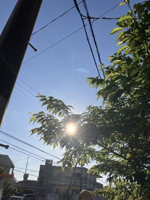
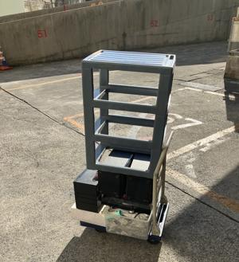
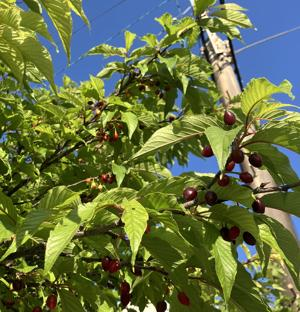

うるがいの話 ある日
最新: 電子入国カード事前登録【うるがいの話 ある日】とは 一日だけのプログです
『うるがいの話』の最新一日だけのプログで、通信料が少なく経済的だ。カニの画像をクリックすると全ての日付が載る『うるがいの話』サイトを表示します
|
|
【うるがいの話】 うるがい(ｳﾙｶﾞｲ urugai)とは、『もずくがに』の名前でとても大きくなります。 |
|---|---|
|
|
【カミマヤーの話】 猫のことを方言でマヤーといいます。カミマヤー（kamimayaa）とは、神の猫のことです。 |
|
【たながぁの音楽】 たながぁ（ﾀﾅｶﾞｰ tanagaa）とは手長えびのことで、何種類かあり大きいのは車 エビぐらいになります。 |

|
【ぶながぁの話】 ぶながぁ(ﾌﾞﾅｶﾞｰ bunagaa)とは、赤い髪の毛、赤い身体、そして身長は１ｍ２０ｃｍ ぐらい、川の蟹を食べているの目撃された。場所は沖縄県国頭郡大宜味村のと ある村僕の隣近所に住んでいる爺さんから、聞いた話です。 |
|
|
【ギーマの話】 ギーマ(giima)とは、山原の里山に咲くスズランに似た、 花を付けます。実は食べられます、 気が付くと口の周りが紫になっています。 |
2025年03月22日 (土）電子入国カード事前登録
18:03

ネットで電子入国カード事前登録を申請する、ウーン、旅行会社に
お願いすれば一人２千円、なるほど、一時間以上かかった。二人な
ので４千円か、ところで、自分のパスポートの電話番号が、固定電
話を書いてあった。おバカちゃんか、携帯電話の番号で訂正する。
マンションから食器を移動するため、皆さんが活動しない早朝を狙
ってマンションへ行く、駐車場について部屋の鍵を忘れていること
に気づく（当然、鍵を取りに戻った）。８時１１分、台車２回目の
荷物である。

寝る前の読書をしていたら、空海の入定の日であることに気付く。
『中学生にもわかる仏教』小暮 満寿雄∥著 より
８３５年、自らの寿命が尽きる日を知った空海は、五穀断ちに入り
、三月二十一日入定する。時に空海六十ニ歳だった。
美味しそうな、サクランボ。美味しかったゼ。
